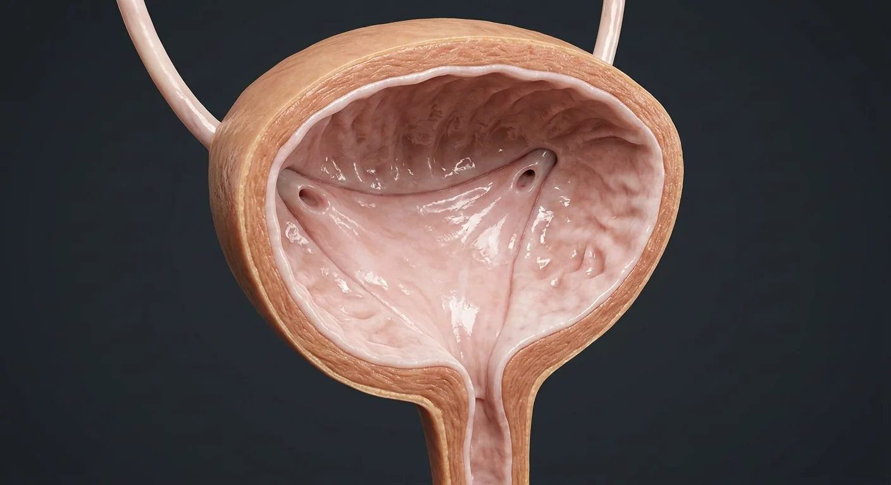

ORGAN → UNDER THE LENS
Bladder urothelium and wall
Tap to compare the organ region with a tissue-level teaching illustration.
Read about Urothelial umbrella cells ↓A detrusor-muscle reservoir with a smooth trigone and a two-stage sphincter.

Median umbilical ligamentDome (apex)Ureters enteringBladder bodyDetrusor muscleSuperior vesical arteriesUreteric orificesUreterovesical junctionPerivesical fasciaBladder fundusInterureteric ridgeTrigoneInternal urethral orificeUrotheliumVesical venous plexusInternal & external sphinctersUrethraThe bladder is a muscular sac lined by transitional (urothelial) epithelium that stretches from five cell layers down to two as it fills. The detrusor muscle contracts under parasympathetic control (S2–S4) while the internal sphincter (smooth muscle) and external sphincter (skeletal, pudendal nerve) keep urine in. The trigone — the triangle between the two ureteric orifices and the internal urethral orifice — is smooth because it develops from the mesonephric duct, and its oblique ureteric tunnels act as flap valves preventing reflux. Micturition is a spinal reflex under voluntary control from the pons and cortex.
These are educational cutaways, not literal magnifications of an organ pixel or laboratory slides. A ring marks the approximate tissue region; part-specific lines appear only where identifiable.
Tap to compare the organ region with a tissue-level teaching illustration.
Read about Urothelial umbrella cells ↓These 17 structures describe anatomy related to the chapter’s regional illustration. Each entry separates location, function and a clinical point.
The superior part, pointing toward the pubic symphysis and connected to the urachus (median umbilical ligament).
What it doesExpands upward into the abdomen as the bladder fills.
Clinical connectionA patent urachus can leak urine at the umbilicus in a newborn.
Three layers of interlacing smooth muscle with the wall thickened into trabeculae when obstructed.
What it doesContraction empties the bladder; relaxation allows storage at low pressure.
Clinical connectionChronic outlet obstruction (prostate) hypertrophies it into trabeculae and diverticula; overactivity causes urge incontinence.
Stratified transitional epithelium with umbrella cells whose plaques make it impermeable to urine.
What it doesA stretch-tolerant, urine-proof lining.
Clinical connectionIts instability to carcinogens (smoking, aniline dyes) makes transitional-cell carcinoma the classic bladder cancer.
The smooth triangle bounded by the two ureteric orifices and the internal urethral orifice; mucosa firmly bound to muscle.
What it doesFunnel for emptying; its stretch receptors trigger the micturition reflex.
Clinical connectionThe interureteric ridge between the orifices is the first landmark sought at cystoscopy.
Slit-like openings of the ureters at the posterolateral corners of the trigone, with oblique intramural tunnels.
What it doesOne-way entry of urine; the tunnel acts as a flap valve.
Clinical connectionA short tunnel allows vesicoureteric reflux, a cause of childhood renal scarring.
The inferior angle of the trigone where the bladder neck meets the urethra.
What it doesOutlet guarded by the internal sphincter.
Clinical connectionBladder neck sclerosis or prostate enlargement here causes obstructive voiding and retention.
The internal sphincter is smooth muscle of the bladder neck (sympathetic); the external is skeletal muscle in the urogenital diaphragm (pudendal, voluntary).
What it doesMaintain continence; the external sphincter is under conscious control.
Clinical connectionAfter spinal cord injury above S2 the bladder becomes reflexic with detrusor–sphincter dyssynergia.
Female ~4 cm, male ~20 cm (prostatic, membranous, spongy parts).
What it doesConveys urine out of the body; in males, also semen.
Clinical connectionCatheterisation and instrumentation make it the commonest site of iatrogenic stricture, especially the male membranous urethra.
The two muscular ducts pierce the posterolateral bladder wall obliquely.
What it doesDeliver ureteric jets of urine every 10–30 seconds.
Clinical connectionThe vesicoureteric junction is the third and commonest site of ureteric stone impaction.
Distensible muscular reservoir between superior dome and base.
What it doesStores urine at low pressure until voiding.
Clinical connectionOverdistention can impair detrusor contraction.
Posterior basal surface facing rectum in men and anterior vagina in women.
What it doesForms stable posterior surface as dome expands.
Clinical connectionSex-specific adjacent anatomy matters in pelvic surgery.
Oblique intramural path where ureter enters bladder wall.
What it doesCompresses during filling to reduce vesicoureteral reflux.
Clinical connectionShort intramural course predisposes to reflux.
Raised mucosal fold connecting the two ureteric openings.
What it doesMarks upper margin of bladder trigone.
Clinical connectionUseful landmark during cystoscopy.
Patent proximal branches of umbilical artery from internal iliac artery.
What it doesSupply superior bladder and distal ureter.
Clinical connectionCollateral pelvic vessels can affect operative bleeding.
Network of veins around bladder draining toward internal iliac veins.
What it doesReturns blood from bladder wall.
Clinical connectionCommunicates with nearby pelvic venous plexuses.
Fibrous postnatal remnant of urachus extending from bladder apex toward umbilicus.
What it doesTethers bladder dome anteriorly.
Clinical connectionPersistent urachal tissue may form a cyst or sinus.
Loose connective tissue surrounding bladder in extraperitoneal space.
What it doesPermits bladder filling and separates surgical planes.
Clinical connectionInflammation may extend along extraperitoneal tissue.
These 3 additional entries give anatomical context. They are deliberately not assigned a photographic pin on the regional image.
Large superficial epithelial cells lining distensible urinary tract.
What it doesForm an impermeable apical barrier as the bladder stretches.
Clinical connectionLoss of barrier can increase mucosal irritation.
Connective tissue layer beneath urothelium containing vessels and nerves.
What it doesSupports the bladder mucosa.
Clinical connectionDepth of tumor invasion is critical for staging.
Folds of mucosa in an empty bladder outside the smooth trigone.
What it doesUnfold as bladder fills.
Clinical connectionTrigone remains comparatively smooth.
Short answers grounded in the structures described above. Use the illustrated guide for anatomical context.
A stretchable urothelial lining and detrusor muscle allow filling. During urination, coordinated detrusor contraction and sphincter relaxation empty the bladder.
The trigone is a triangular region on the internal bladder floor between the two ureteric openings and the internal urethral opening.
Three layers of interlacing smooth muscle with the wall thickened into trabeculae when obstructed. Function: Contraction empties the bladder; relaxation allows storage at low pressure.
Stratified transitional epithelium with umbrella cells whose plaques make it impermeable to urine. Function: A stretch-tolerant, urine-proof lining.
Function: Funnel for emptying; its stretch receptors trigger the micturition reflex. The smooth triangle bounded by the two ureteric orifices and the internal urethral orifice; mucosa firmly bound to muscle.
Follow these connected structures and body systems in the illustrated atlas.
 KidneyCoronal section plus a nephron: filtration, reabsorption, secretion and urine concentration.↗
KidneyCoronal section plus a nephron: filtration, reabsorption, secretion and urine concentration.↗ Male reproductive systemSperm production in the scrotum, maturation in the epididymis, and a shared exit with urine.↗
Male reproductive systemSperm production in the scrotum, maturation in the epididymis, and a shared exit with urine.↗ Female reproductive systemA cyclic system: ovulation, fertilisation in the tube, implantation in the endometrium.↗
Female reproductive systemA cyclic system: ovulation, fertilisation in the tube, implantation in the endometrium.↗ Spinal cordCross-section: a grey butterfly inside white tracts, wrapped in three meninges.↗
Spinal cordCross-section: a grey butterfly inside white tracts, wrapped in three meninges.↗General anatomy references and related source chapters for continued study. These links do not make the digital illustrations clinical images or certify every anatomical variant.
This educational page is not medical advice and has not undergone formal clinical peer review. Spotted an error? Contact the editor.
Open the realistic interactive plate, label lines, focus view and self-test.